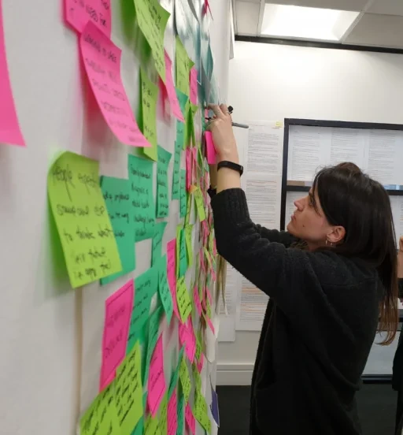
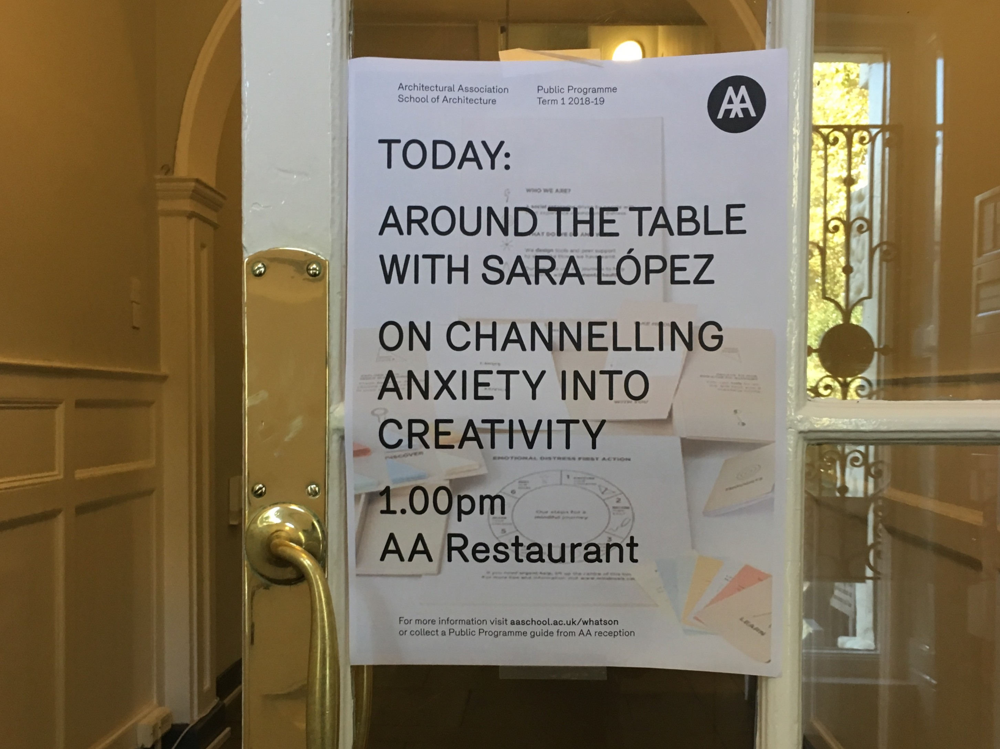
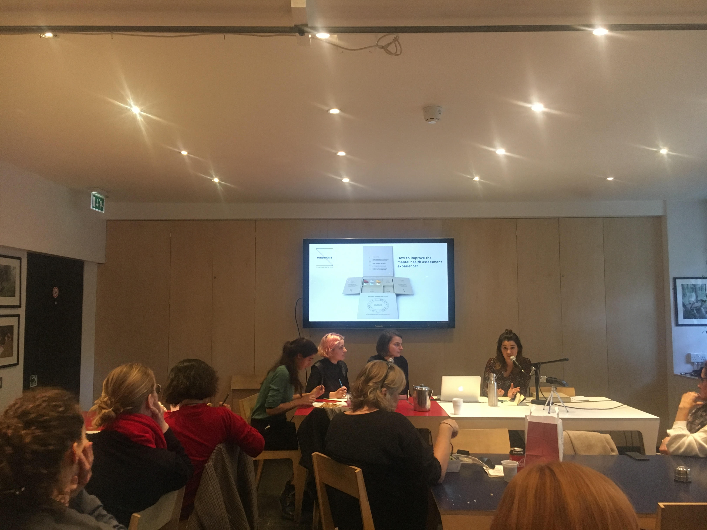
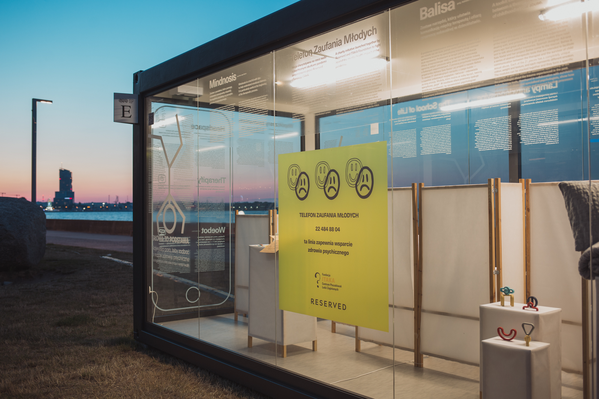
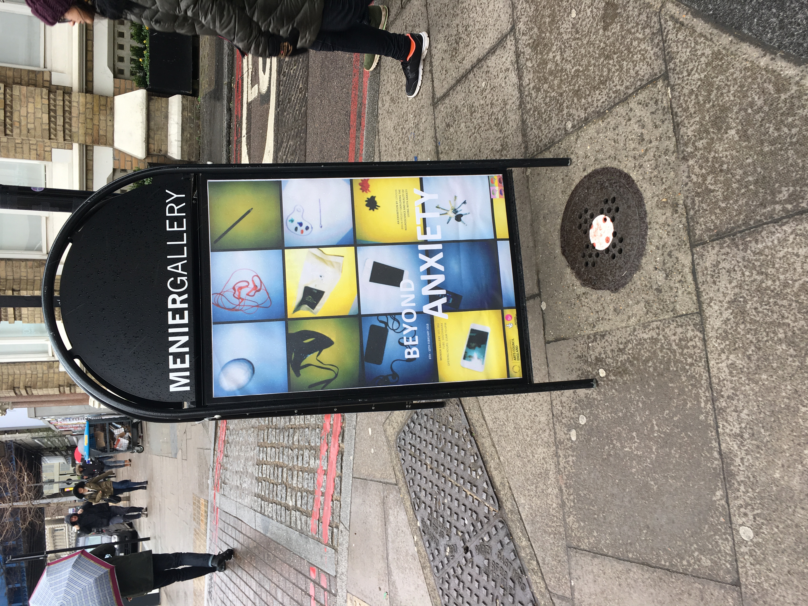

/about
I'm Sara, a designer, researcher and facilitator who loves making sense of problems in a way others can understand.
For the past six years, I've grown from individual contributor to design lead at Kaluza, working across product design, journey management and user research along the way.
Before that, I worked with local authorities, health charities and nonprofits on wicked issues like mental health, homelessness and social care. Different sectors, different constraints, but the same starting point every time: put the people affected at the centre of the process, not just the brief.
Since 2016, I've also had a self-initiated practice in design and wellbeing, which has led to freelance work that I'd like to build on.
Explore Mindnosis →Timeline
In public
talks & guest lectures
Design Change Makers
On channelling anxiety into creativity
Designing with publics
exhibitions, collaborations & workshops
Time to take care about our mental health
Feed your Mind Candy
Beyond Anxiety
features
+ more press
Mindnosis kit helps people overcome mental health issues ↗
Eight of the most thought-provoking design responses to mental health ↗
Meet the designer creating an alternative way to discuss mental health ↗
Mindnosis kit designed to help people overcome their mental health issues ↗
Design Change Makers: creativity and the challenges of mental health ↗
awards
Creative Conscience Gold Award






Have a problem worth untangling?
let's talk →